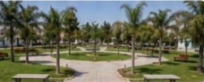

بيت جالا عراقة التاريخ و نبض الحياة اليومية
"لوحة حية تجمع بين عراقة التراث الديني والتاريخي، وأصالة الحياة اليومية والتجارية لمدينة بيت جالا العريقة."

كنيسة البشارة للروم الأرثوذكس
إحدى أقدم الكنائس في فلسطين، تقع في قلب المدينة القديمة ببيت جالا. تعكس عمارتها التاريخية التراث العريق مكاناً هاماً للعبادة.

منظر عام لمدينة بيت جالا
تقع مدينة بيت جالا على تلال جبلية تطل على مدينتي بيت لحم والقدس، وهي إحدى المدن الرئيسية في محافظة بيت لحم، تشتهر ببيوتها بيلا.

سوق بيت جالا المحلي
سوق شعبي نابض بالحياة يعكس التراث التجاري للمدينة، ويقدم مجموعة متنوعة من المنتجات المحلية، بما في ذلك زيت الزيتون.

شارع في وسط بيت جالا القديمة
أحد الشوارع التاريخية الساحرة، يربط بين مختلف الحارات القديمة والمعالم السياحية، وبطرازه المعماري العتيق وأجوائه الهادئة.
بيت جالا: من عراقة المدخل إلى حداثة المؤسسات
"إطلالة على أبرز الصروح الخدمية والتعليمية والصحية التي تشكل ركيزة الحياة اليومية والتطور الحضاري في بيت جالا، بدءاً من بوابتها التاريخية العريقة."
مستشفى كاريتاس للأطفال - بيت جالا
مستشفى تخصصي للأطفال في محافظة بيت لحم، يقدم خدمات صحية متكاملة ومتميزة للأطفال من جميع أنحاء فلسطين.

بوابة بيت جالا القديمة
مدخل تاريخي لبلدة بيت جالا القديمة، يعود إلى قرون مضت. يمثل بقايا التحصينات القديمة التي تعاقبت على المنطقة.
بلدية بيت جالا
الجهة المسؤولة عن إدارة شؤون المدينة وتقديم الخدمات للمواطنين والعمل على تطوير البنية التحتية والمظهر الحضاري للمدينة.

جامعة بيت لحم - حرم بيت جالا
صرح أكاديمي وثقافي هام، يمثل التعليم العالي في فلسطين ويستضيف الفعاليات والأنشطة الأكاديمية والثقافية المختلفة.
بيت جالا: نبض المجتمع وروح الوطن
"إطلالة تجمع بين المتنفسات الطبيعية للمدينة، ورمزيتها الدينية والوطنية المتمثلة في مسجدها التاريخي وعلمها المرفرف، وصولاً إلى سحر أجوائها الليلية المتلألئة."

حديقة بلدية بيت جالا العامة
متنفس طبيعي لأهالي المدينة، يضم مساحات خضراء وألعاباً للأطفال ومناطق للجلوس والمشي لممارسة الأنشطة الترفيهية.

مسجد عمر بن الخطاب في بيت جالا
أحد المساجد الرئيسية والتاريخية في المدينة، يتميز بتصميمه المعماري وموقعه في قلب المجتمع، ويمثل التآخي الديني في المدينة.

علم فلسطين يرفرف في سماء بيت جالا
رمز العزة والكرامة، يرفرف علم فلسطين عالياً في سماء بيت جالا ليؤكد الانتماء والهوية الوطنية على مر التاريخ.

بيت جالا ليلاً
إطلالة ليلية ساحرة لمدينة بيت جالا، حيث تتلألأ أضواء البيوت والشوارع والمباني، لتعكس جمال المدينة وحيويتها.